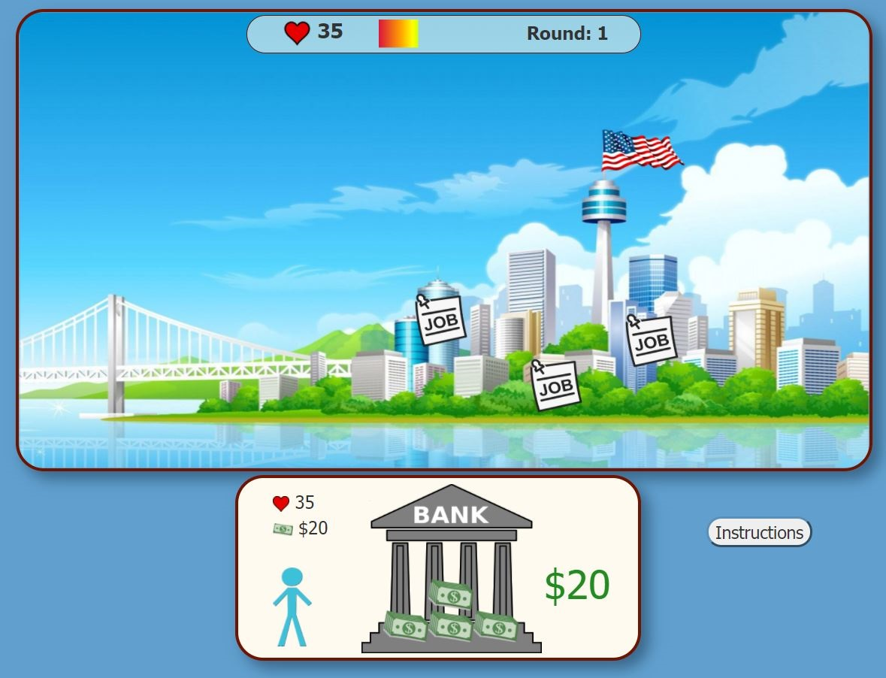
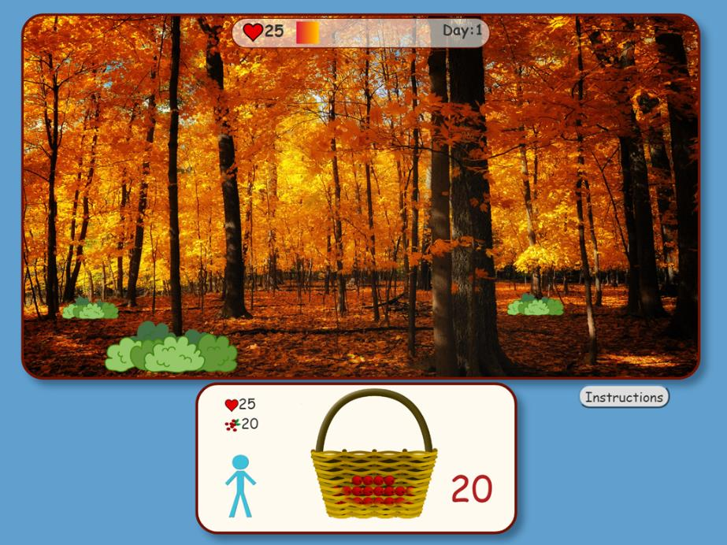

|
Web Games I design and program games in JavaScript for experiments about politics. The games run on all popular desktop web browsers and can be embedded in survey software, such as Qualtrics. Click below to play demos of a voting game I programmed for my research about taxes. In the game, players recieve high or low income and then vote on the tax rate. Voting about taxes in a U.S. election:
Voting about sharing in a remote village:
Embedding Software in Online Surveys |